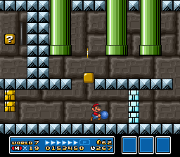
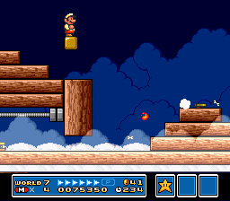

SUPER MARIO BROS. 3
Wiki
Levels
World 7 - Pipe Land
| World | Image | Overview |
|---|---|---|
| World 7-1 |
The first level of Pipe Land, which is a vertical stage where the player has to travel through pipes to move upward. |
|
| World 7-2 |
A level split between above ground and underwater below ground. |
|
| World 7-3 |
An athletic level with many grassy hills, gaps, and a Lakitu flying overhead. |
|
| World 7-4 |
An autoscrolling underwater level with many scattering Bloobers, Big Berthas, and Jelectros. This level introduces Spiny Cheep-Cheeps. |
|
| World 7-5 |
 | An underground pipe maze with hidden blocks that block paths. |
| World 7-  1 1 |
The first Piranha Plant course. Completing this course will award the player with a P-Wing. |
|
| World 7- 1 |
The first fortress level of Pipe Land. This fortress requires a Super Leaf or P-Wing to access the warp pipe that leads to Boom Boom. |
|
| World 7-6 |
A vertical scaling level where the player has to use directional lifts to move upward. |
|
| World 7-7 |
A level filled with Munchers that the player has to run across while powered up with Starmen. |
|
| World 7-8 |
A level with many types of Piranha Plants. This level introduces a Fiery Walking Piranha just before the end. |
|
| World 7-9 |
A level made up of a long broken pipe maze. |
|
| World 7- 2 |
The second fortress level of Pipe Land. This fortress contains several pipes spread out over a pool of lava. |
|
| World 7- 2 |
The second Piranha Plant course. Completing this course will award the player with a Super Mushroom. |
|
| World 7-  |
 | The seventh airship level of the game, with Ludwig von Koopa as the boss. |